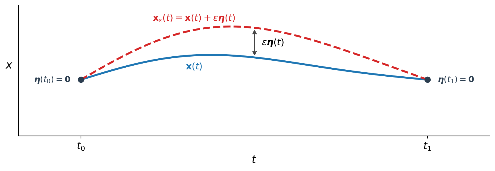
Meshless
Structure-Preserving
Algorithms
SPEGEO: Structure-Preserving Algorithms and Geometric Numerical Integration school
Stefan Possanner
Max Planck Institute for Plasma Physics, Garching, Germany
June 22-26, 2026 · Strasbourg
Course overview
Part I: Theory - From Lagrangian to Eulerian coordinates via Euler-Poincaré reduction
- Variational principles vs. Newtonian mechanics
- Variational principles in fluid mechanics (field theories)
- Lagrangian vs. Eulerian descriptions of fluid motion
- Euler-Poincaré reduction
Part II: Discretization - Particle methods for fluid Lagrangians
- Functions (0-forms) and volume forms
- Discrete Lagrangians
- Smoothed-particle hydrodynamics (SPH)
Part III: Software - Solving meshfree discretizations with Struphy
- Struphy: an open-source Python package for solving PDEs
- Hands-on session: Implementing and running SPH simulations with Struphy
Key ideas of Part I
- Variational principles vs. Newtonian mechanics
\[ \frac{\mathrm d}{\mathrm dt} \frac{\partial L}{\partial \dot{\mathbf x}} - \frac{\partial L}{\partial \mathbf x} = 0\quad \Leftrightarrow \quad m \ddot{\mathbf x} = -\frac{\partial V}{\partial \mathbf x} \]
- Variational principles in fluid mechanics (field theories)
\[ \mathcal A(\mathbf u, \rho, s) = \int_0^T \int \rho \left( \frac{|\mathbf u|^2}{2} - \mathcal U(\rho, s) - V/m \right) d\mathbf x\, dt\,,\qquad \delta \mathcal A = ? \]
- \(\mathbf u (t,\mathbf x)\,\,\,\) fluid velocity
- \(\mathcal U(\rho, s)\,\,\,\) internal energy per unit mass
- \(\rho(t,\mathbf x)\,\,\,\) mass density
- \(s(t,\mathbf x)\,\,\,\) entropy density
- \(V(t,\mathbf x)\,\,\,\) external potential
Key ideas of Part I (cont.)
- Lagrangian vs. Eulerian descriptions of fluid motion
\[ \frac{\mathrm d^2}{\mathrm dt^2} \Phi_t(\mathbf x_0) = -\frac 1m \nabla V(\Phi_t(\mathbf x_0))\,,\qquad \Phi_0(\mathbf x_0) = \mathbf x_0 \quad \Leftrightarrow \quad \left\{ \begin{aligned} &\frac{\partial}{\partial t} \rho + \nabla \cdot (\rho \mathbf u) = 0 \\ &\frac{\partial}{\partial t} \mathbf u + (\mathbf u \cdot \nabla) \mathbf u = - \frac{1}{\rho}\nabla V \end{aligned} \right. \]
- Euler-Poincaré reduction
\[ \mathbf u(t, \mathbf x) := \dot \Phi_t \circ \Phi_t^{-1}(\mathbf x) \]
\[ \delta \mathbf u = \dot{\boldsymbol \eta} + \mathbf u \cdot \nabla \boldsymbol \eta - \boldsymbol \eta \cdot \nabla \mathbf u \]
\[ \mathcal A_\textrm{Lagrange}(\Phi_t, \dot{\Phi}_t) \Leftrightarrow \mathcal A_{Euler}(\mathbf u, \rho, s) \]
Key ideas of Part II
- Functions (0-forms) and volume forms
\[ \rho:\quad \mathbf x \in \Omega \mapsto \rho(\mathbf x) \in \mathbb R,\qquad\quad \rho^\textrm{vol}:\quad \Omega \subset_\textrm{open} \mathbb R^3 \mapsto \int_\Omega \rho^{\textrm{vol}}(\mathbf x) \,\mathrm d \mathbf x \in \mathbb R \]
- Discrete Lagrangians
\[ \rho^\textrm{vol}(t, \mathbf x) \approx \rho_h^\textrm{vol}(t, \mathbf x) = \sum_{i=1}^N w_i \, \delta(\mathbf x - \mathbf x_i(t)) \quad \Rightarrow \quad \mathcal A(\mathbf u, \rho, s) \approx \mathcal A_h(\mathbf x_1, \ldots, \mathbf x_N, \dot{\mathbf x}_1, \ldots, \dot{\mathbf x}_N) \]
- Smoothed-particle hydrodynamics (SPH)
\[ A(\mathbf x) = \int A(\mathbf y) \delta(\mathbf x - \mathbf y) \, d\mathbf y \approx \int A(\mathbf y) W(\mathbf x - \mathbf y, h) \, d\mathbf y \approx \sum_{i=1}^N w_i A(\mathbf x_i) W(\mathbf x - \mathbf x_i, h) \]
Key ideas of Part III
- Struphy: an open-source Python package for solving PDEs

- FAIR software: Freely available, Accessible, Interoperable, Reusable
- Available on GitHub (https://github.com/struphy-hub/struphy) and PyPI
- Built on top of Pyccel for high-performance kernel execution
- Check out the repo now to get familiar with the code structure and documentation before the hands-on session!
Key ideas of Part III (cont.)
- Hands-on session: Implementing and running SPH simulations with Struphy
- Exploring the Struphy API and documentation
- Understanding SPH kernel density evaluations (using MPI)
- Running tutorials on SPH methods for fluid dynamics
- Fluid in a given Beltrami force field
- Meshless gas expansion
- Damped sound wave
- Hagen-Poiseuille flow in a pipe
- Dam break problem
- Sod shock tube … ?
Try installing Struphy according to the instructions in the README before the hands-on session.
References
- [1] J. J. Monaghan, “Smoothed particle hydrodynamics”, Rep. Prog. Phys. 68 (2005) 1703–1759
- [2] V. Springel, “Smoothed Particle Hydrodynamics in Astrophysics”, Annu. Rev. Astron. Astrophys. 2010. 48:391–430
- [3] D.J. Prince, “Smoothed particle hydrodynamics and magnetohydrodynamics”, J. Comp. Phys. 231 (2012) 759–794
These slides will be persistent at:
https://spossann.github.io/2026_SPEGEO_Strasbourg_school/
Part I: Theory - From Lagrangian to Eulerian coordinates via Euler-Poincaré reduction
1. Variational principles vs. Newtonian mechanics
We seek the trajectory \(\mathbf x(t)\,\,\) of a particle moving in a potential \(V\),
\[ \mathbf x:[t_0,t_1] \to \mathbb R^3, \qquad V = V(\mathbf x)\,, \]
with initial conditions
\[ \mathbf x(0)=\mathbf x_0, \qquad \dot{\mathbf x}(0)=\mathbf v_0\,. \]
Newtonian dynamics starts from forces (\(F = -\partial V/\partial \mathbf x\quad\,\,\,\)),
\[ m\,\ddot{\mathbf x} = -\frac{\partial V}{\partial \mathbf x} \]
whereas the variational approach starts from an action \(\mathcal A[\mathbf x]\,\,\,\),
\[ \mathcal A[\mathbf x] = \int_{t_0}^{t_1} \left( \frac{m}{2}|\dot{\mathbf x}|^2 - V\right)\,\mathrm dt,\qquad \delta \mathcal A = 0, \qquad \Rightarrow \quad \frac{\mathrm d}{\mathrm dt}\frac{\partial L}{\partial \dot{\mathbf x}} - \frac{\partial L}{\partial \mathbf x} = 0 \]
1a. Variation of a functional?
\[ \mathcal A[\mathbf x] = \int_{t_0}^{t_1} L(\mathbf x,\dot{\mathbf x},t)\,\mathrm dt, \]
Consider a family of perturbed trajectories
\[ \mathbf x_\varepsilon(t) = \mathbf x(t) + \varepsilon\,\delta \mathbf x(t), \qquad \delta \mathbf x(t_0)=\delta \mathbf x(t_1)=\mathbf 0. \]
The first variation in direction \(\delta \mathbf x\) is defined by
\[ \delta \mathcal A[\mathbf x;\delta \mathbf x] := \lim_{\varepsilon\to 0}\frac{\mathcal A[\mathbf x_\varepsilon] - \mathcal A[\mathbf x]}{\varepsilon}\,, \]
1a. Variation of a functional? (cont.)
The variation can be written as a directional derivative in the space of trajectories:
\[ \delta \mathcal A[\mathbf x;\delta \mathbf x] := \left.\frac{\mathrm d}{\mathrm d\varepsilon}\mathcal A[\mathbf x_\varepsilon]\right|_{\varepsilon=0}. \]
\[ \begin{aligned} \delta \mathcal A[\mathbf x;\delta \mathbf x] &= \left.\frac{\mathrm d}{\mathrm d\varepsilon}\int_{t_0}^{t_1} L \left(\mathbf x_\varepsilon,\frac{\mathrm d \mathbf x_\varepsilon}{\mathrm d t},t \right)\,\mathrm dt\right|_{\varepsilon=0} \\[1mm] &=\left.\int_{t_0}^{t_1} \left(\frac{\partial L}{\partial \mathbf x}\cdot \frac{\mathrm d}{\mathrm d\varepsilon}\mathbf x_\varepsilon + \frac{\partial L}{\partial \dot{\mathbf x}}\cdot \frac{\mathrm d}{\mathrm d\varepsilon}\frac{\mathrm d \mathbf x_\varepsilon}{\mathrm d t}\right)\,\mathrm dt\right|_{\varepsilon=0} \\[1mm] &=\int_{t_0}^{t_1} \left(\frac{\partial L}{\partial \mathbf x}\cdot \delta \mathbf{x} + \frac{\partial L}{\partial \dot{\mathbf x}}\cdot \frac{\mathrm d \delta \mathbf x}{\mathrm dt}\right)\,\mathrm dt \\[1mm] &=\int_{t_0}^{t_1} \left(\frac{\partial L}{\partial \mathbf x} - \frac{\mathrm d}{\mathrm dt}\frac{\partial L}{\partial \dot{\mathbf x}}\right) \cdot \delta \mathbf{x}\,\mathrm dt + \left.\frac{\partial L}{\partial \dot{\mathbf x}}\cdot \delta \mathbf x\right|_{t_0}^{t_1} \end{aligned} \]
Hamilton’s principle states that critical trajectories satisfy
\[ \delta \mathcal A[\mathbf x;\delta \mathbf x] = 0 \quad\text{for all admissible }\delta \mathbf x. \]
1b. Why use variational principles?
- One scalar object generates the full dynamics:
\[ \mathcal A[\mathbf x] = \int_{t_0}^{t_1} L(\mathbf x,\dot{\mathbf x},t)\,\mathrm dt \]
- Constraints are handled systematically, for example with multipliers:
\[ \delta \int_{t_0}^{t_1} \big(L(\mathbf x,\dot{\mathbf x},t) + \lambda(t)\,g(\mathbf x,t)\big)\,\mathrm dt = 0 \]
- Symmetry and conservation are linked directly through invariance of the action.
\[ \textrm{symmetry of }\mathcal A\quad\Longleftrightarrow\quad\text{conserved quantity} \]
- Leads to structure-preserving discretizations, discussed in Part II.
1d. Conservation laws from variational structure
For \(L = L(t,\mathbf x,\dot{\mathbf x})\quad\,\), one obtains the identity
\[ \begin{aligned} \frac{\mathrm d}{\mathrm dt}\left(\dot{\mathbf x} \cdot \frac{\partial L}{\partial \dot{\mathbf x}} - L\right) &= \ddot{\mathbf x} \cdot \frac{\partial L}{\partial \dot{\mathbf x}} + \dot{\mathbf x} \cdot \frac{\mathrm d}{\mathrm dt} \frac{\partial L}{\partial \dot{\mathbf x}} - \dot{\mathbf x} \cdot \frac{\partial L}{\partial \mathbf x} - \ddot{\mathbf x} \cdot \frac{\partial L}{\partial \dot{\mathbf x}} - \frac{\partial L}{\partial t} \\ &= -\frac{\partial L}{\partial t} \end{aligned} \]
Therefore, if there is no explicit time dependence,
\[ \frac{\partial L}{\partial t}=0 \qquad\Longrightarrow\qquad E := \dot{\mathbf x} \cdot \frac{\partial L}{\partial \dot{\mathbf x}} - L, \quad \frac{\mathrm dE}{\mathrm dt}=0 \]
If a coordinate is cyclic, one gets momentum conservation:
\[ \frac{\partial L}{\partial \mathbf x}=0 \qquad\Longrightarrow\qquad \frac{\mathrm d}{\mathrm dt}\left(\frac{\partial L}{\partial \dot{\mathbf x}}\right)=0\,,\qquad p := \frac{\partial L}{\partial \dot{\mathbf x}}, \quad \frac{\mathrm dp}{\mathrm dt}=0 \]
1e. Example: particle in a central potential
Consider a particle of mass \(m\,\) in a central potential \(V(r)\,\,\) in polar coordinates \((r,\varphi)\,\,\,\).
\[ |\dot{\mathbf x}|^2 = \dot r^2 + r^2\dot\varphi^2 \qquad\Longrightarrow\qquad L(r,\varphi,\dot r,\dot\varphi) = \frac{m}{2}\!\left(\dot r^2 + r^2\dot\varphi^2\right) - V(r) \]
Energy conservation — \(L\) has no explicit time dependence (\(\partial L/\partial t = 0\quad\)):
\[ E = \dot r\,\frac{\partial L}{\partial \dot r} + \dot\varphi\,\frac{\partial L}{\partial \dot\varphi} - L = \frac{m}{2}\!\left(\dot r^2 + r^2\dot\varphi^2\right) + V(r), \qquad \frac{\mathrm dE}{\mathrm dt} = 0 \]
Angular-momentum conservation — \(\varphi\) is cyclic (\(\partial L/\partial \varphi = 0\quad\)):
\[ \frac{\partial L}{\partial \varphi} = 0 \qquad\Longrightarrow\qquad \ell = \frac{\partial L}{\partial \dot\varphi} = m r^2\dot\varphi, \qquad \frac{\mathrm d\ell}{\mathrm dt} = 0 \]
Two symmetries of \(\mathcal A\,\,\) yield two conserved quantities — without solving any equation of motion!
2. Variational principles for PDEs (field theories)
For a field \(u(t,\mathbf x)\,\,\,\) on spacetime \([t_0,t_1]\times\Omega\quad\), consider the action
\[ \mathcal A[u] = \int_{t_0}^{t_1}\int_\Omega \mathcal L\big(u,\partial_t u,\nabla u,t,\mathbf x\big)\,\mathrm d\mathbf x\,\mathrm dt. \]
An admissible variation is a perturbation
\[ u_\varepsilon(t,\mathbf x) = u(t,\mathbf x) + \varepsilon\,\eta(t,\mathbf x), \qquad \eta = 0 \text{ on the spacetime boundary.} \]
The first variation is defined by
\[ \delta \mathcal A[u;\eta] := \left.\frac{\mathrm d}{\mathrm d\varepsilon}\mathcal A[u_\varepsilon]\right|_{\varepsilon=0}. \]
2. Variational principles for PDEs (field theories, cont.)
Computing the derivative gives
\[ \delta \mathcal A[u;\eta] = \int_{t_0}^{t_1}\int_\Omega \left( \frac{\partial \mathcal L}{\partial u}\,\eta + \frac{\partial \mathcal L}{\partial (\partial_t u)}\,\partial_t \eta + \frac{\partial \mathcal L}{\partial (\nabla u)}\cdot\nabla \eta \right)\,\mathrm d\mathbf x\,\mathrm dt. \]
After integration by parts in time and space,
\[ \delta \mathcal A[u;\eta] = \int_{t_0}^{t_1}\int_\Omega \left( \frac{\partial \mathcal L}{\partial u} - \partial_t\frac{\partial \mathcal L}{\partial (\partial_t u)} - \nabla\cdot\frac{\partial \mathcal L}{\partial (\nabla u)} \right)\eta\,\mathrm d\mathbf x\,\mathrm dt. \]
Thus stationarity for all admissible \(\eta\,\) yields the field Euler-Lagrange equation
\[ \frac{\partial \mathcal L}{\partial u} - \partial_t\frac{\partial \mathcal L}{\partial (\partial_t u)} - \nabla\cdot\frac{\partial \mathcal L}{\partial (\nabla u)} = 0. \]
2a. Example: Poisson equation from an action
Let \(\phi(\mathbf x)\,\,\) be a scalar field on \(\Omega\,\) and consider
\[ \mathcal A[\phi] = \int_\Omega \left( \frac{|\nabla \phi|^2}{2} - \rho\,\phi\right)\,\mathrm d\mathbf x. \]
Take variations
\[ \phi_\varepsilon = \phi + \varepsilon\,\eta, \qquad \eta|_{\partial\Omega}=0. \]
Then
\[ \delta \mathcal A[\phi;\eta] = \left.\frac{\mathrm d}{\mathrm d\varepsilon}\mathcal A[\phi_\varepsilon]\right|_{\varepsilon=0} = \int_\Omega \left(\nabla\phi\cdot\nabla\eta - \rho\,\eta\right)\,\mathrm d\mathbf x. \]
2a. Example: Poisson equation from an action (cont.)
Integrating by parts and using \(\eta|_{\partial\Omega}=0\),
\[ \int_\Omega \nabla\phi\cdot\nabla\eta\,\mathrm d\mathbf x = -\int_\Omega \Delta\phi\,\eta\,\mathrm d\mathbf x. \]
Therefore
\[ \delta \mathcal A[\phi;\eta] = \int_\Omega \left(-\,\Delta\phi - \rho\right)\eta\,\mathrm d\mathbf x. \]
Stationarity for all \(\eta\) gives
\[ -\,\Delta\phi - \rho = 0 \qquad\Longleftrightarrow\qquad -\Delta\phi = \rho. \]
3. Lagrangian vs. Eulerian descriptions of fluid motion
Let \(\mathbf u(t,\mathbf x)\quad\) be the fluid velocity field at any given time \(t\) at position \(\mathbf x\).
Lagrangian description (particle-following):
Track each fluid parcel labeled by its initial position \(\mathbf x_0\).
\[ \begin{aligned} \frac{\mathrm d}{\mathrm dt}\Phi_t(\mathbf x_0) &= \mathbf u\big(t,\Phi_t(\mathbf x_0)\big), \qquad \Phi_0(\mathbf x_0)=\mathbf x_0. \\[1mm] \frac{\mathrm d^2}{\mathrm dt^2}\Phi_t(\mathbf x_0) &= \frac 1m \mathbf F\big(t,\Phi_t(\mathbf x_0)\big) \end{aligned} \]
\(\Phi_t(\mathbf x_0)\,\,\,\) is the position at time \(t\) of the fluid parcel that started at \(\mathbf x_0\) at time \(0\).
\(\mathbf F(t, \mathbf x)\,\,\,\) is the force acting on the fluid parcel at position \(\mathbf x\) at time \(t\).
For each \(t \in [t_0,t_1]\quad\), the mapping \(\Phi_t:\Omega \to \Omega\quad\) is a diffeomorphism. \(\Phi_t\,\) is called the flow map and encodes the full fluid motion.
3. Lagrangian vs. Eulerian descriptions of fluid motion (cont.)
Eulerian description (field-at-fixed-point):
Observe the mass density \(\rho(t,\mathbf x)\,\,\,\) at fixed spatial location \(\mathbf x\,\). For compressible flow, this yields
\[ \begin{aligned} \partial_t\rho + \nabla\cdot(\rho\mathbf u) &= 0, \\[2mm] \partial_t\mathbf u + (\mathbf u\cdot\nabla)\mathbf u &= \frac{1}{\rho} \mathbf F(t,\mathbf x). \end{aligned} \]
- solve a system of PDEs (!) for \(\rho(t,\mathbf x)\,\,\,\) and \(\mathbf u(t,\mathbf x)\)
Bridge between both views: The Lagrangian parcel acceleration equals the Eulerian material derivative:
\[ \frac{\mathrm d}{\mathrm dt}\mathbf u\big(t,\Phi(t,\mathbf x_0)\big) = \big(\partial_t + \mathbf u\cdot\nabla\big)\mathbf u. \]
3a. Lagrangian vs. Eulerian sketches
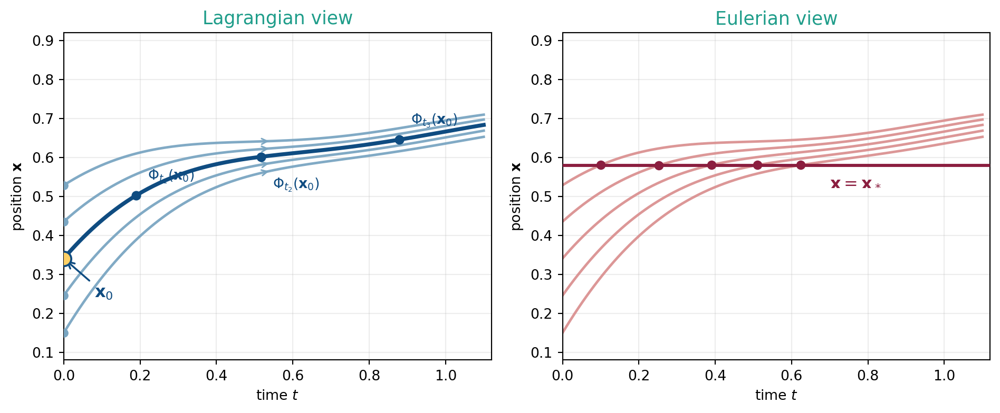
Lagrangian viewpoint
- Move with the flow (follow parcels)
- Unknown: trajectory / flow map \(\Phi_t(\mathbf x_0)\)
- Label parcels by initial position \(\mathbf x_0\)
- Question: where does this parcel go?
- Solve ODEs for \(\Phi_t(\mathbf x_0)\,\,\,\) for different \(\mathbf x_0\)
Eulerian viewpoint
- Stay at a fixed location \(\mathbf{x}_*\)
- Unknowns: fields \(\rho(t,\mathbf x),\,\mathbf u(t,\mathbf x)\)
- Label points by spatial location \(\mathbf x\)
- Question: what passes through?
- Solve PDEs for \(\rho(t,\mathbf x),\,\mathbf u(t,\mathbf x)\)
4. Euler-Poincaré reduction
Suppose we have a Lagrangian description of fluid motion in terms of the flow map \(\Phi_t(\mathbf x_0)\,\,\,\) for all \(\mathbf x_0 \in \Omega \subset \mathbb R^3:\)
\[ \begin{aligned} \frac{\mathrm d}{\mathrm dt}\Phi_t(\mathbf x_0) &= \mathbf u\big(t,\Phi_t(\mathbf x_0)\big), \qquad \Phi_0(\mathbf x_0)=\mathbf x_0. \\[1mm] \frac{\mathrm d^2}{\mathrm dt^2}\Phi_t(\mathbf x_0) &= - \frac 1m \nabla V\big(\Phi_t(\mathbf x_0)\big) \end{aligned} \]
From what we have learned so far it is easy to write down a variational principle for this Lagrangian description for a fixed initial position \(\mathbf x_0:\)
\[ \mathcal A_\textrm{Lagrange}(\Phi_t, \dot{\Phi}_t) = \int_0^T \left( m\frac{|\dot{\Phi}_t(\mathbf x_0)|^2}{2} - V\big(\Phi_t(\mathbf x_0)\big) \right) \,\mathrm dt. \]
Can we write down an equivalent variational principle for the Eulerian description?
4a. Local conservation of mass
A volume form assigns to any open subset \(\Omega \subset \mathbb R^3\quad\) a real number:
\[ \rho^\textrm{vol}:\quad \Omega \subset_\textrm{open} \mathbb R^3 \mapsto \int_\Omega \rho^\textrm{vol}(\mathbf x)\,\textrm d \mathbf x \in \mathbb R. \]
A density (transported by the flow) is a time-dependent volume form that is invariant under the flow \(\Phi_t:\)
\[ \int_{\Phi_t(\Omega_0)} \rho^\textrm{vol}(t, \mathbf x)\,\textrm d \mathbf x = \int_{\Omega_0} \rho^\textrm{vol}(0, \mathbf x_0)\,\textrm d \mathbf x_0\qquad \forall \,\Omega_0. \]
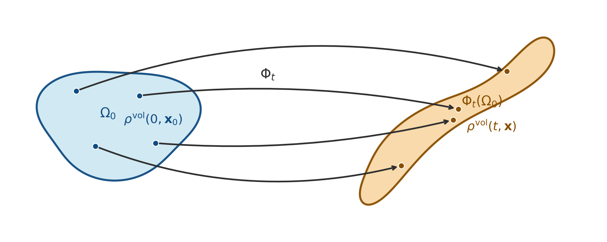
4a. Local conservation of mass (cont.)
- A density satisfies the continuity equation:
\[ \frac{\partial \rho^\textrm{vol}}{\partial t} + \nabla \cdot (\rho^\textrm{vol} \mathbf u) = 0. \]
where \(\mathbf u(t, \mathbf x):= \dot{\Phi}_t \circ \Phi_t^{-1}(\mathbf x)\qquad\,\) is the Eulerian velocity field, which follows from \(\mathbf x = \Phi_t(\mathbf x_0).\)
- The following is constant along the flow:
\[ \frac{\mathrm d}{\mathrm dt} \Big[ \rho^\textrm{vol}(\Phi_t) \,\big| \textrm{det} D\Phi_t\big| \Big] = 0. \]
- The variation of a density is given by
\[ \delta \rho^\textrm{vol} = -\nabla \cdot (\rho^\textrm{vol} \boldsymbol\eta). \]
for arbitrary vector field \(\boldsymbol\eta(t, \mathbf x):= \delta \Phi_t \circ \Phi_t^{-1}(\mathbf x).\)
4b. From Lagrangian to Eulerian coordinates
Assume an initial mass density \(\rho^\textrm{vol}(0, \mathbf x_0)\quad\) and consider the modified Lagrange action
\[ \mathcal A_\textrm{Lagrange}(\Phi_t, \dot{\Phi}_t) = \int_0^T \int_{\Omega_0} \left( \frac{|\dot{\Phi}_t(\mathbf x_0)|^2}{2} - \frac 1m V\big(\Phi_t(\mathbf x_0)\big) \right) \rho^\textrm{vol}(0, \mathbf x_0) \, \textrm d \mathbf x_0\,\mathrm dt. \]
Using the change of variables \(\mathbf x = \Phi_t(\mathbf x_0)\quad\), as well as the dynamics given by
\(\dot{\Phi}_t(\mathbf x_0) = \mathbf u(t, \Phi_t(\mathbf x_0))\qquad\,\,\,\), we get
\[ \mathcal A_\textrm{Euler}(\mathbf u, \ldots) = \int_0^T \int_{\Omega} \left( \frac{|\mathbf u(t, \mathbf x)|^2}{2} - \frac 1m V(\mathbf x) \right) \frac{\rho^\textrm{vol}(0, \Phi_t^{-1}(\mathbf x))}{ \big| \textrm{det} D\Phi_t(\Phi_t^{-1}(\mathbf x)) \big|} \, \textrm d \mathbf x\,\mathrm dt \]
We can now use 2. from the previous slide, namely
\[ \rho^\textrm{vol}(t, \Phi_t(\mathbf x_0)) = \frac{\rho^{\textrm{vol}}(0, \mathbf x_0)}{\big| \textrm{det} D\Phi_t(\mathbf x_0) \big|} \]
4b. From Lagrangian to Eulerian
\[ \mathcal A_\textrm{Euler}(\mathbf u, \rho^\textrm{vol}) = \int_0^T \int_{\Omega} \left( \frac{|\mathbf u(t, \mathbf x)|^2}{2} - \frac 1m V(\mathbf x) \right) \rho^\textrm{vol}(t, \mathbf x) \, \textrm d \mathbf x\,\mathrm dt \]
The unknown flow map \(\Phi_t\,\) has thus been replaced by the two unknown fields \(\mathbf u(t, \mathbf x)\,\,\,\) and \(\rho^\textrm{vol}(t, \mathbf x)\quad\). These fields have to be determined by variation of the new action.
We already know the variations of the density \(\rho^\textrm{vol}\,\,\) from 3. in the previous slide:
\[ \delta \rho^\textrm{vol} = -\nabla \cdot (\rho^\textrm{vol} \boldsymbol\eta). \]
for arbitrary vector field \(\boldsymbol\eta(t, \mathbf x):= \delta \Phi_t \circ \Phi_t^{-1}(\mathbf x).\qquad\) We can compute the variations of the velocity field from
\[ \mathbf u(t, \mathbf x) := \dot{\Phi}_t \circ \Phi_t^{-1}(\mathbf x) \]
to obtain (after some algebra)
\[ \delta \mathbf u = \partial_t \boldsymbol\eta + \mathbf u \cdot \nabla \boldsymbol\eta - \boldsymbol\eta \cdot \nabla \mathbf u. \]
4c. Computing Eulerian (constrained) variations
The Euler action:
\[ \mathcal A_\textrm{Euler}(\mathbf u, \rho^\textrm{vol}) = \int_0^T \int_{\Omega} \left( \frac{|\mathbf u(t, \mathbf x)|^2}{2} - \frac 1m V(\mathbf x) \right) \rho^\textrm{vol}(t, \mathbf x) \, \textrm d \mathbf x\,\mathrm dt \]
The constrained variations:
\[ \begin{aligned} \delta \mathbf u &= \partial_t \boldsymbol\eta + \mathbf u \cdot \nabla \boldsymbol\eta - \boldsymbol\eta \cdot \nabla \mathbf u, \\[2mm] \delta \rho^\textrm{vol} &= -\nabla \cdot (\rho^\textrm{vol} \boldsymbol\eta). \end{aligned} \]
The computation:
\[ \delta \mathcal A_\textrm{Euler} = \underbrace{\int_0^T \int_{\Omega} \mathbf u \cdot \delta \mathbf u \, \rho^\textrm{vol} \, \textrm d \mathbf x\,\mathrm dt}_{\text{①}} + \underbrace{\int_0^T \int_{\Omega} \left( \frac{|\mathbf u|^2}{2} - \frac 1m V \right) \delta \rho^\textrm{vol} \, \textrm d \mathbf x\,\mathrm dt}_{\text{②}} \]
4c. Computing Eulerian (constrained) variations (cont.)
First integral:
\[ \begin{aligned} \text{①} = \int_0^T \int_{\Omega} \mathbf u \cdot \delta \mathbf u \, \rho^\textrm{vol} \, \textrm d \mathbf x\,\mathrm dt &= \int_0^T \int_{\Omega} \mathbf u \cdot \left( \partial_t \boldsymbol\eta + \mathbf u \cdot \nabla \boldsymbol\eta - \boldsymbol\eta \cdot \nabla \mathbf u \right) \rho^\textrm{vol} \, \textrm d \mathbf x\,\mathrm dt \\[2mm] &= \int_0^T \int_{\Omega} \left[ - \frac{\partial}{\partial t}(\rho^\textrm{vol} \mathbf u) - \nabla \cdot (\rho^\textrm{vol} \mathbf u \mathbf u^\top) - \rho^\textrm{vol} \nabla \frac{|\mathbf u|^2}{2} \right] \cdot \boldsymbol \eta \, \textrm d \mathbf x\,\mathrm dt \end{aligned} \]
Second integral:
\[ \begin{aligned} \text{②} = \int_0^T \int_{\Omega} \left( \frac{|\mathbf u|^2}{2} - \frac 1m V \right) \delta \rho^\textrm{vol} \, \textrm d \mathbf x\,\mathrm dt &= - \int_0^T \int_{\Omega} \left( \frac{|\mathbf u|^2}{2} - \frac 1m V \right) \nabla \cdot (\rho^\textrm{vol} \boldsymbol\eta) \, \textrm d \mathbf x\,\mathrm dt \\[2mm] &= \int_0^T \int_{\Omega} \left[ \rho^\textrm{vol} \nabla \left( \frac{|\mathbf u|^2}{2} - \frac 1m V \right) \right] \cdot \boldsymbol\eta \, \textrm d \mathbf x\,\mathrm dt \end{aligned} \]
4c. Computing Eulerian (constrained) variations (cont.)
Hamilton’s principle \(\text{①} + \text{②} = 0\quad\) for arbitrary \(\boldsymbol\eta\,\) yields Euler’s equation for the fluid velocity field:
\[ \frac{\partial}{\partial t}(\rho^\textrm{vol} \mathbf u) + \nabla \cdot (\rho^\textrm{vol} \mathbf u \mathbf u^\top) = - \frac{\rho^\textrm{vol}}{m} \nabla V. \]
The mass conservation law is given by our assumption that \(\rho^\textrm{vol}\,\) is a density transported by the flow:
\[ \frac{\partial \rho^\textrm{vol}}{\partial t} + \nabla \cdot (\rho^\textrm{vol} \mathbf u) = 0. \]
Part II: Discretization - Particle methods for fluid Lagrangians
5. Overview
- 5a. Approximating a density by particles
- 5b. Approximating integrals by particles (Monte-Carlo)
- 5c. Constant weights
- 5d. Comparing the two approaches
- 5e. Example: Pressure-less fluids in a given potential
- 5f. Density estimation and smoothing
5a. Approximating a density by particles
A density \(\rho^\textrm{vol}\,\,\,\) satisfies
\[ \int_{\Phi_t(\Omega_0)} \rho^\textrm{vol}(t, \mathbf x)\,\textrm d \mathbf x = \int_{\Omega_0} \rho^\textrm{vol}(0, \mathbf x_0)\,\textrm d \mathbf x_0\qquad \forall \,\Omega_0. \]
Divide the initial domain \(\Omega_0\,\) into small subregions such that \(\bigcup_i \Omega_0^i = \Omega_0:\)
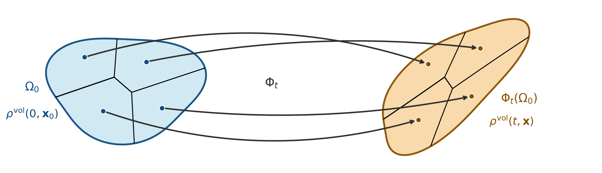
5a. Approximating a density by particles (cont.)
Define the weights \(w_i \in \mathbb R\quad\) for each subregion \(\Omega_0^i\,\) by
\[ w_i := \int_{\Omega_0^i} \rho^\textrm{vol}(0, \mathbf x_0)\,\textrm d \mathbf x_0 \]
such that
\[ \sum_i w_i = \int_{\Omega_0} \rho^\textrm{vol}(0, \mathbf x_0)\,\textrm d \mathbf x_0 \]
Now let \(\mathbf x_0^i \in \Omega_0^i\quad\), then
\[ \mathbf x^i(t) = \Phi_t(\mathbf x_0^i) \quad \in \Phi_t(\Omega_0^i) \qquad \forall t \in [0, T]. \]
5a. Approximating a density by particles (cont.)
Particle approximation: We can approximate the density \(\rho^\textrm{vol}(t, \mathbf x)\quad\) at time \(t\) by a sum of weighted delta distributions centered at the particle locations \(\mathbf x^i(t):\)
\[ \rho^\textrm{vol}(t, \mathbf x) \approx \rho_N(t, \mathbf x) := \sum_{i=1}^N w_i\, \delta(\mathbf x - \mathbf x^i(t)). \]
The discrete \(\rho_N\,\) is still a density (!) since
\[ \int_{\Phi_t(\Omega_0)} \rho_N(t, \mathbf x)\,\textrm d \mathbf x = \sum_{i=1}^N w_i = \int_{\Omega_0} \rho^\textrm{vol}(0, \mathbf x_0)\,\textrm d \mathbf x_0. \]
5a. Approximating a density by particles (cont.)
The particles are advected by the flow,
\[ \mathbf x^i(t) = \Phi_t(\mathbf x_0^i),\quad \Longleftrightarrow \quad \dot{\mathbf x}^i(t) = \mathbf u(t, \mathbf x^i(t))\quad \mathbf x^i(0) = \mathbf x_0^i. \]
The weights \(w_i\,\) are constant in time, since they are defined by the initial density \(\rho^\textrm{vol}(0, \mathbf x_0)\quad\) and the partition of the initial domain \(\Omega_0\,\) into subregions \(\Omega_0^i.\)
The equation for the acceleration of the particels can be derived from a variational principle.
5b. Approximating integrals by particles (Monte-Carlo)
Suppose we aim to compute the integral
\[ I = \int_\Omega A(\mathbf x)\,\rho^\textrm{vol}(\mathbf x)\,\textrm d \mathbf x. \]
for some function (or \(0\,\)-form) \(A(\mathbf x)\,\,\). Further, suppose \(s^\textrm{vol}\,\) denotes a probability density supported on \(\Omega\,\) such that
\[ s^\textrm{vol}(\mathbf x) > 0\quad\forall\mathbf x \in \Omega,\qquad \int_\Omega s^\textrm{vol}(\mathbf x)\,\textrm d \mathbf x = 1. \]
Then we can rewrite the integral \(I\,\) as an expectation value \(\mathbb E\,\) with respect to \(s^\textrm{vol}\,:\)
\[ I = \int_\Omega A(\mathbf x)\frac{\rho^\textrm{vol}(\mathbf x)}{s^\textrm{vol}(\mathbf x)} s^\textrm{vol}(\mathbf x)\,\textrm d \mathbf x = \mathbb E\left[ A\frac{\rho^\textrm{vol}}{s^\textrm{vol}} \right]_{s^\textrm{vol}} \]
5b. Monte-Carlo (cont.)
Monte Carlo approximation. Draw \(N\,\) independent samples \(\mathbf x_i \sim s^\textrm{vol}\quad\) and approximate
\[ I \approx I_N := \frac{1}{N}\sum_{i=1}^N A(\mathbf x_i)\frac{\rho^\textrm{vol}(\mathbf x_i)}{s^\textrm{vol}(\mathbf x_i)} = \frac 1N \sum_{i=1}^N w_i A(\mathbf x_i). \]
with weights
\[ w_i = \frac{\rho^\textrm{vol}(\mathbf x_i)}{s^\textrm{vol}(\mathbf x_i)}. \]
The sample mean \(I_N\,\) can be viewed as a random variable itself, when viewing the samples \(\mathbf x_i\,\) as random variables distributed according to \(s^\textrm{vol}\,\). It is an unbiased estimator of the true mean value (which is our integral):
\[ \mathbb E[I_N] = \mathbb E\left[ \frac 1N \sum_{i=1}^N w_i A(\mathbf x_i) \right] = \frac 1N \sum_{i=1}^N \mathbb E\left[w_i A(\mathbf x_i) \right] = \frac{NI}{N} = I. \]
5b. Approximating integrals by particles (Monte-Carlo, cont.)
The variance of \(I_N\,\) is given by
\[ \mathbb V[I_N] = \mathbb E\!\left[(I_N - \mathbb E[I_N])^2\right] = \mathbb E\!\left[(I_N - I)^2\right] \]
and is a good measure for the error. Using Bienaymé’s identity for independent random variables \(X_i,\)
\[ \mathbb V\!\left[\sum_{i=1}^N X_i\right] = \sum_{i=1}^N \mathbb V[X_i], \]
5b. Approximating integrals by particles (Monte-Carlo, cont.)
We can estimate the rate of convergence of the Monte Carlo approximation:
\[ \begin{aligned} \mathbb V[I_N] &= \mathbb V\left[ \frac 1N \sum_{i=1}^N w_i A(\mathbf x_i) \right] \\[2mm] &= \frac{1}{N^2} \mathbb V\left[ \sum_{i=1}^N w_i A(\mathbf x_i) \right] \\[2mm] &= \frac{1}{N^2} \left[ \sum_{i=1}^N \mathbb V[w_i A(\mathbf x_i)] \right] = \frac{N \sigma^2}{N^2} = \frac{\sigma^2}{N}. \end{aligned} \]
where \(\sigma\,\) is the standard deviation of the random variable \(w_i A(\mathbf x_i)\quad\).
5b. Approximating integrals by particles (Monte-Carlo, cont.)
Hence the root-mean-square error decays as
\[ \boxed{\varepsilon_N := \sqrt{\mathbb E\!\left[(I_N - I)^2\right]} = \frac{\sigma}{\sqrt{N}}} \]
independent of the spatial dimension \(d\) — this is the key advantage of Monte Carlo over quadrature rules, which converge as \(N^{-k/d}\,\,\,\) for smooth \(k\,\)-th order rules.
5c. Constant weights
In the Monte-Carlo approximation, the weights \(w_i\,\) are given by
\[ w_i(t) = \frac{\rho^\textrm{vol}(t, \mathbf x_i(t))}{s^\textrm{vol}(t, \mathbf x_i(t))}, \]
where \(\mathbf x_i(t) = \Phi_t(\mathbf x_0^i)\qquad\) are the particle locations at time \(t\,\). We can make the following observations:
- \(\rho^\textrm{vol}\,\,\) is a density and thus
\[ \rho^\textrm{vol}(t, \mathbf x_i(t)) = \frac{\rho^\textrm{vol}(0, \mathbf x_0^i)}{\big| \textrm{det} D\Phi_t(\mathbf x_0^i) \big|}. \]
5c. Constant weights (cont.)
- \(s^\textrm{vol}\,\,\) is an arbitrary probability density supported on \(\Omega\,\). We can choose it to be transported by the flow as well, i.e.
\[s^\textrm{vol}(t, \mathbf x_i) = \frac{s^\textrm{vol}(0, \mathbf x_0^i)}{\big| \textrm{det} D\Phi_t(\mathbf x^i_0) \big|}. \]
This implies constancy of the weights:
\[ w_i(t) = \frac{\rho^\textrm{vol}(t, \mathbf x_i(t))}{s^\textrm{vol}(t, \mathbf x_i(t))} = \frac{\rho^\textrm{vol}(0, \mathbf x_0^i)}{s^\textrm{vol}(0, \mathbf x_0^i)} = w_i(0) = const. \]
5c. Constant weights (cont.)
Hence, in the Monte-Carlo approach, one draws the initial samples \(\mathbf x_0^i\,\) from a probability density \(s^\textrm{vol}(0, \mathbf x_0)\quad\). The information about the initial density \(\rho^\textrm{vol}(0, \mathbf x_0)\quad\) is encoded in the constant weights \(w_i\,\). The particles are then transported by the flow,
\[ \mathbf x^i(t) = \Phi_t(\mathbf x_0^i),\quad \Longleftrightarrow \quad \dot{\mathbf x}^i(t) = \mathbf u(t, \mathbf x^i(t))\quad \mathbf x^i(0) = \mathbf x_0^i, \]
and the weights remain constant.
The equation for the acceleration of the particels can be derived from a variational principle.
5d. Comparing the two approaches
The particle approximation of the density \(\rho^\textrm{vol}(t, \mathbf x)\quad\) is given by
\[ \rho_N(t, \mathbf x) = \sum_{i=1}^N w_i\, \delta(\mathbf x - \mathbf x^i(t)). \]
where the markers are transported by the flow,
\[ \mathbf x^i(t) = \Phi_t(\mathbf x_0^i) \]
and the weights remain constant.
The same discrete ansatz is obtained from two different constructions of the initial markers and weights.
5d. Comparing the two approaches
| Density approach | Monte-Carlo approach | |
|---|---|---|
| Drawing the markers | Partition \(\Omega_0\) into grid cells \(\Omega_0^i\) and place one marker at the cell center \(\mathbf x_0^i \in \Omega_0^i\quad\). The initial markers are therefore distributed regularly. | Draw the initial markers randomly and independently, \(\mathbf x_0^i \sim s^\textrm{vol}(0, \mathbf x_0)\quad\,\,\). The initial markers therefore follow the sampling density \(s^\textrm{vol}\). |
| Weights | \(w_i := \int_{\Omega_0^i} \rho^\textrm{vol}(0, \mathbf x_0)\,\textrm d\mathbf x_0\). | \(w_i := \dfrac 1N \dfrac{\rho^\textrm{vol}(0, \mathbf x_0^i)}{s^\textrm{vol}(0, \mathbf x_0^i)}\) |
| Comments | Needs numerical quadrature over the initial cells. | Lots of noise, but provable convergence of integrals \(\sim 1/\sqrt N\,\,\,\). |
5e. Example: Pressure-less fluids in a given potential
We can now discretize the action in Eulerian coordinates,
\[ \mathcal A_\textrm{Euler}(\mathbf u, \rho^\textrm{vol}) = \int_0^T \int_{\Omega} \left( \frac{|\mathbf u(t, \mathbf x)|^2}{2} - \frac 1m V(\mathbf x) \right) \rho^\textrm{vol}(t, \mathbf x) \, \textrm d \mathbf x\,\mathrm dt \]
by substituting the particle approximation
\[ \rho^\textrm{vol}(t, \mathbf x) \approx \rho_N(t, \mathbf x) = \sum_{i=1}^N w_i\, \delta(\mathbf x - \mathbf x^i(t)) \]
to obtain …
5e. Example: Pressure-less fluids in a given potential (cont.)
\[ \begin{aligned} \mathcal A(\mathbf u, \mathbf x^1, \ldots, \mathbf x^N) &= \int_0^T \int_{\Omega} \left( \frac{|\mathbf u(t, \mathbf x)|^2}{2} - \frac 1m V(\mathbf x) \right) \rho_N(t, \mathbf x) \, \textrm d \mathbf x\,\mathrm dt \\[2mm] &= \sum_{i=1}^N w_i \int_0^T \left( \frac{|\mathbf u(t, \mathbf x^i(t))|^2}{2} - \frac 1m V(\mathbf x^i(t)) \right) \, \mathrm dt \\[2mm] &= \sum_{i=1}^N w_i \int_0^T \left( \frac{|\dot{\mathbf x}^i(t)|^2}{2} - \frac 1m V(\mathbf x^i(t)) \right) \, \mathrm dt \end{aligned} \]
where we used the fact that the particles are advected by the flow, i.e. \(\dot{\mathbf x}^i(t) = \mathbf u(t, \mathbf x^i(t)).\)
5e. Example (cont.)
The action has been reduced to a sum of \(N\,\) independent single-particle actions. The dynamics of the system is thus given by \(N\,\) independent copies of the single-particle dynamics in the potential \(V(\mathbf x)\,\,\,\) i.e. \(N\,\) independent solutions of Newton’s equation
\[ \ddot{\mathbf x}^i = -\frac{1}{m}\nabla V(\mathbf x^i). \]
By contrast, an Eulerian (grid-based) discretization of the same problem would require the discretization of
\[ \begin{aligned} \frac{\partial \rho^\textrm{vol}}{\partial t} + \nabla \cdot (\rho^\textrm{vol} \mathbf u) &= 0 \\[2mm] \frac{\partial \mathbf u}{\partial t} + \mathbf u \cdot \nabla \mathbf u &= - \frac{1}{m} \nabla V \end{aligned} \]
which features nonlinear terms and requires the solution of a coupled system of equations at each time step.
5f. Density estimation and smoothing
At each time \(t\,\) we have
\[ \rho_N(t, \mathbf x) = \sum_{i=1}^N w_i\, \delta(\mathbf x - \mathbf x^i(t)). \]
But the true solution of the PDE is smooth.
- How to evaluate the density?
- How to visualize it?
- How to compute derivatives of the density?
We can obtain a smoother approximation by convolution of \(\rho_N\,\) with a smoothing kernel \(W_h\,\) (e.g. a Gaussian kernel with bandwidth \(h\,\)):
\[ \rho_{h,N}(t, \mathbf x) := (W_h * \rho_N)(t, \mathbf x) = \int_\Omega W_h(\mathbf x - \mathbf y) \rho_N(t, \mathbf y)\,\textrm d \mathbf y = \sum_{i=1}^N w_i\, W_h(\mathbf x - \mathbf x^i(t)). \]
5f. Density estimation (cont.)
At a chosen evaluation point \(\mathbf x^*\,\,\), the sum only includes contributions from particles within the \(h\,\)-neighborhood of \(\mathbf x^*,\)
\[ \rho_{h,N}(t, \mathbf x^*) = \sum_{i: \|\mathbf x^* - \mathbf x^i(t)\| < h} w_i\, W_h(\mathbf x^* - \mathbf x^i(t)). \]
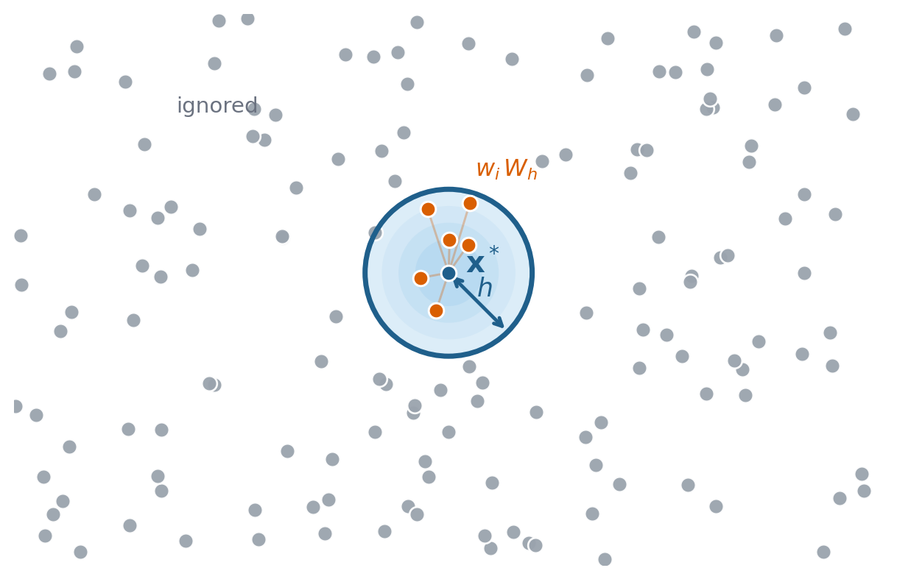
Algorithmically, we need an efficient way to query the neighboring particles for each evaluation point \(\mathbf x^*.\)
5f. Density estimation (cont.)
Solution: assign particles to boxes, require box-size \(\geq h\,\,\,\), then:
- find box of \(\mathbf x^*\)
- query particles in the same box and the neighboring boxes only
- compute the sum over the particles in these boxes and ignore the rest
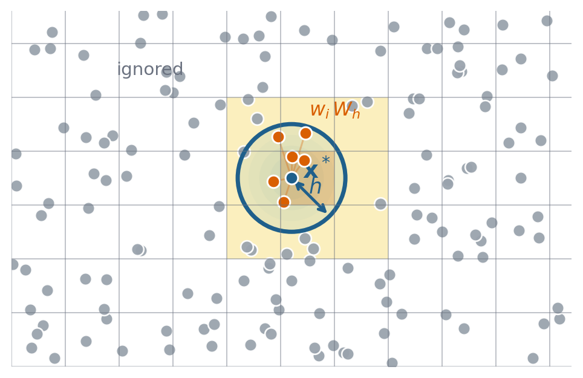
5f. Density estimation and smoothing (cont.)
The question of convergence is important:
- \(\rho_{h,N} \to \rho^\textrm{vol}\quad\,\) as \(N \to \infty\quad\) and \(h\,\) fixed
- \(\rho_{h,N} \to \rho^\textrm{vol}\quad\,\) as \(h \to 0\quad\) and \(Nh^3\,\,\) fixed
These are non-trivial questions for later.
Practical Part I: Marker drawing and density evaluation
Overview
We demonstrate SPH kernel density evaluation in 1D using Struphy.
Goal: recover the density \(\rho(\eta_1) = 1.5 + \cos(2\pi\eta_1)\qquad\,\,\) on \(\eta_1 \in [0,1]\quad\) from \(N\,\) markers.
Steps:
- Define domain, background density, and perturbation
- Create a
ParticlesSPHobject and draw markers - Initialize weights \(w_i\) from the background density
- Evaluate the SPH density estimate \(\rho_{h,N}(\eta_1) = \sum_i w_i\,W_h(\eta_1 - \eta_1^i)\)
- Compare with the exact solution
The corresponding test is test_sph_evaluation_1d in struphy/src/struphy/pic/tests/test_sph.py.
Target density
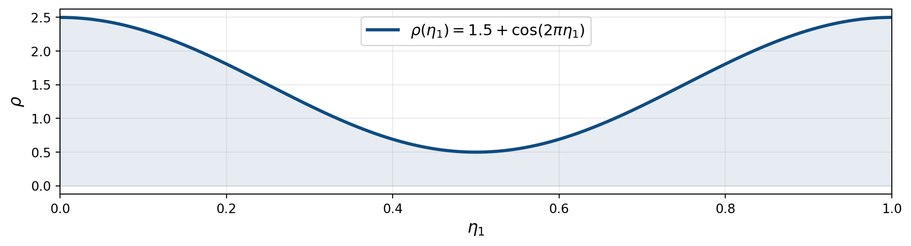
\[ \rho(\eta_1) = \underbrace{1.5}_{\text{background}} + \underbrace{\cos(2\pi\eta_1)}_{\text{perturbation}}, \qquad \eta_1 \in [0,1] \]
Step 1: Domain, background, and particles
import numpy as np
# from the Strpuhy API
from struphy import (
BoundaryParameters, LoadingParameters, SortingParameters, domains, perturbations, equils
)
# not part of the API (loaded for this test only)
from struphy.pic.particles import ParticlesSPH
# 1D domain in logical coordinates eta1 in [0, 1]
domain = domains.Cuboid(l1=1.0, r1=2.0, l2=10.0, r2=20.0, l3=100.0, r3=200.0)
# background n=1.5 plus perturbation: rho = 1.5 + cos(2*pi*eta1)
background = equils.ConstantVelocity(n=1.5, density_profile="constant")
background.domain = domain
pert = {"n": perturbations.ModesCos(ls=(1,), amps=(1.0,))}
# tesselation: 4 markers per box placed on a regular grid
loading_params = LoadingParameters(ppb=4, seed=1607, loading="tesselation")
boundary_params = BoundaryParameters(bc_sph=("periodic", "periodic", "periodic"))
sorting_params = SortingParameters(boxes_per_dim=(24, 1, 1))Step 2: Draw markers and initialize weights
particles = ParticlesSPH(
comm_world=None, # no MPI for this example
loading_params=loading_params,
boundary_params=boundary_params,
sorting_params=sorting_params,
bufsize=1.0,
domain=domain,
background=background,
perturbations=pert,
n_as_volume_form=True,
)
particles.draw_markers(sort=False) # place markers at initial positions
particles.initialize_weights() # compute w_i from background densitydraw_markersplaces one marker per cell center (tesselation) or draws random samplesinitialize_weightssets \(w_i = \int_{\Omega_0^i} \rho^\text{vol}(0, \mathbf x_0)\,\mathrm d\mathbf x_0\)
Step 3: Evaluate the SPH density
# evaluation grid
eta1 = np.linspace(0, 1.0, 100)
ee1, ee2, ee3 = np.meshgrid(eta1, np.array([0.0]), np.array([0.0]), indexing="ij")
# bandwidth = box size h = 1/24
h1, h2, h3 = 1.0 / 24, 1.0, 1.0
rho_sph = particles.eval_density(
ee1, ee2, ee3,
h1=h1, h2=h2, h3=h3,
kernel_type="gaussian_1d",
derivative=0,
)
rho_exact = 1.5 + np.cos(2 * np.pi * eta1)
err = np.max(np.abs(np.array(rho_sph).squeeze() - rho_exact)) / np.max(np.abs(rho_exact))
print(f"Max relative error: {err:.4f}")Max relative error: 0.0008Result: exact vs. SPH
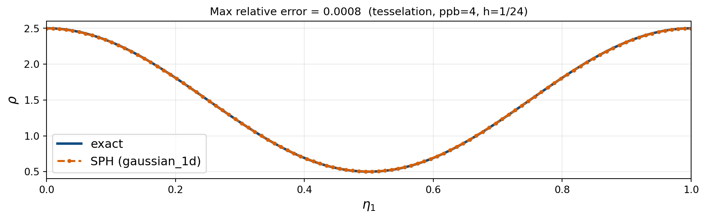
\[ \rho_{h,N}(\eta_1) = \sum_{i=1}^N w_i\, W_h(\eta_1 - \eta_1^i) \approx 1.5 + \cos(2\pi\eta_1) \]
SPH smoothing kernels
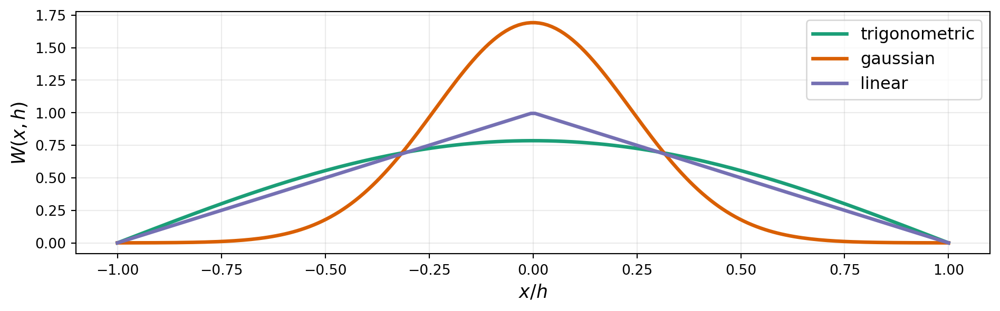
\[ \rho_{h,N}(\mathbf{x}) = \sum_i w_i\, W_h(\mathbf{x} - \mathbf{x}^i), \qquad W_h(\mathbf{x}) = \frac{1}{h}\,W\!\left(\frac{|\mathbf{x}|}{h}\right) \]
Comparing SPH kernels
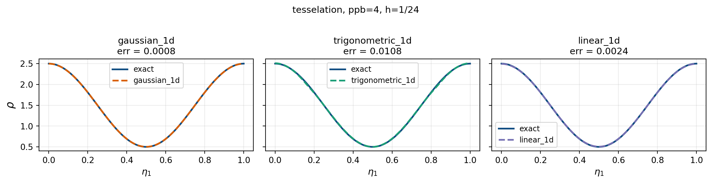
All three kernels recover the density well.
Practical Part II: 2D Density Evaluation
Overview
We extend the SPH density evaluation to 2D using Struphy.
Goal: recover \(\rho(\eta_1,\eta_2) = 1.5 + \cos(2\pi\eta_1)\cos(2\pi\eta_2)\qquad\qquad\) on \((\eta_1,\eta_2)\in[0,1]^2\quad\,\,\) from \(N\,\) markers.
Steps:
- Define domain, background density, and 2D perturbation
- Create a
ParticlesSPHobject and draw markers on a \(12\times12\quad\) grid - Initialize weights from the background density
- Evaluate the 2D SPH density estimate with
gaussian_2d - Compare with the exact solution
The corresponding test is test_sph_evaluation_2d in struphy/src/struphy/pic/tests/test_sph.py.
Target density
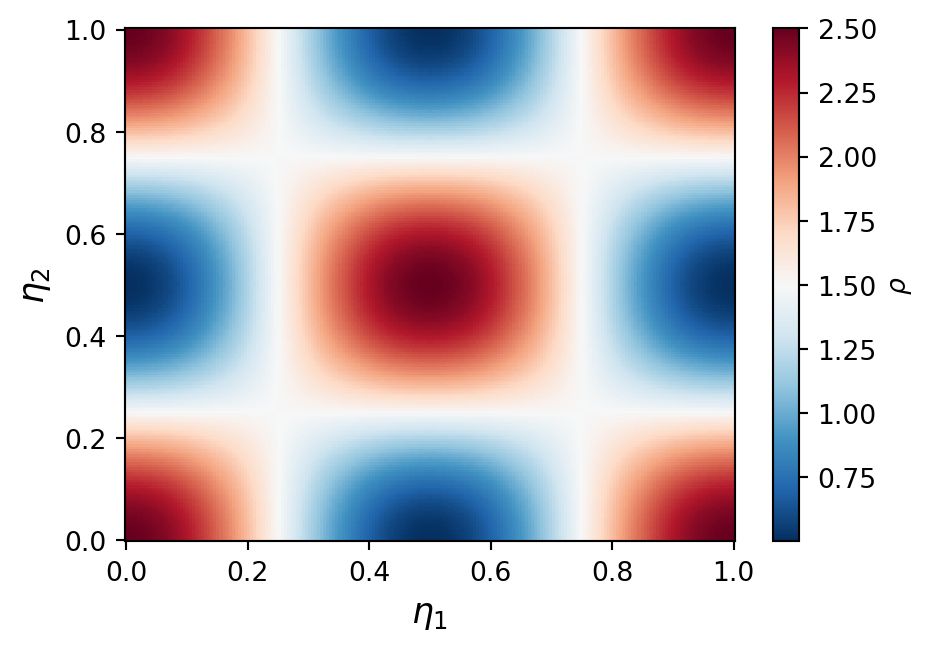
\[ \rho(\eta_1,\eta_2) = \underbrace{1.5}_{\text{background}} + \underbrace{\cos(2\pi\eta_1)\cos(2\pi\eta_2)}_{\text{perturbation}}, \qquad (\eta_1,\eta_2)\in[0,1]^2 \]
Step 1: Domain, background, and particles
# 2D domain; logical coordinates (eta1, eta2) in [0,1]^2
dom2d = domains.Cuboid(l1=1.0, r1=2.0, l2=0.0, r2=2.0, l3=100.0, r3=200.0)
# background n=1.5, perturbation: rho = 1.5 + cos(2pi*eta1)*cos(2pi*eta2)
bg2d = equils.ConstantVelocity(n=1.5, density_profile="constant")
bg2d.domain = dom2d
pert2d = {"n": perturbations.ModesCosCos(ls=(1,), ms=(1,), amps=(1.0,))}
# tesselation: 16 markers per box on a 12x12 grid
loading2d = LoadingParameters(ppb=16, loading="tesselation")
boundary2d = BoundaryParameters(bc_sph=("periodic", "periodic", "periodic"))
sorting2d = SortingParameters(boxes_per_dim=(12, 12, 1))Step 2: Draw markers and initialize weights
- Markers placed on a \(12\times12\quad\) tesselation grid (\(N = 12^2 \times 16 = 2304\qquad\,\) markers)
- Kernel width \(h_1 = h_2 = \tfrac{1}{12}\quad\,\) matches the box size
Step 3: Evaluate the SPH density
# evaluation grid
eta1_2d = np.linspace(0, 1.0, 50)
eta2_2d = np.linspace(0, 1.0, 50)
ee1_2d, ee2_2d, ee3_2d = np.meshgrid(eta1_2d, eta2_2d, np.array([0.0]), indexing="ij")
h2d = 1.0 / 12 # bandwidth = box size
rho_sph_2d = particles2d.eval_density(
ee1_2d, ee2_2d, ee3_2d,
h1=h2d, h2=h2d, h3=1.0,
kernel_type="gaussian_2d",
derivative=0,
)
rho_exact_2d = 1.5 + np.cos(2 * np.pi * ee1_2d) * np.cos(2 * np.pi * ee2_2d)
err_2d = np.max(np.abs(np.array(rho_sph_2d).squeeze() - rho_exact_2d.squeeze())) / np.max(np.abs(rho_exact_2d))
print(f"Max relative error: {err_2d:.4f}")Max relative error: 0.0061Result: exact vs. SPH
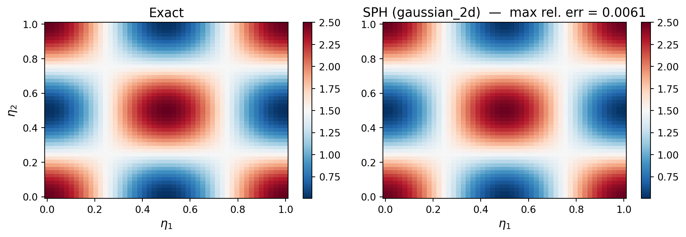
\[ \rho_{h,N}(\eta_1,\eta_2) = \sum_i w_i\, W_h(\eta_1 - \eta_1^i,\,\eta_2 - \eta_2^i) \approx 1.5 + \cos(2\pi\eta_1)\cos(2\pi\eta_2) \]
Convergence: role of \(h\) and \(N\)
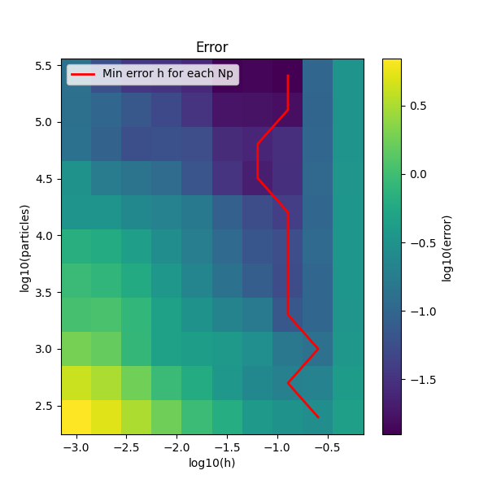
Two competing sources of error:
- Kernel width bias (large \(h\), right): kernel too wide — over-smoothing of sharp features
- Sampling variance (small \(h\), left): too few markers inside the kernel support
Optimal kernel width (red curve): trades off the two effects; as \(N\uparrow\,\) the optimal \(h\) shrinks — more markers allow a finer kernel.
Convergence: along the red curve the minimum error decreases with \(N\). Together \(h\to 0\,\,\,\), \(N\to\infty\,\,\,\,\) with \(N h^d \to\infty\) ensures \(\rho_{h,N}\to\rho\qquad\).
Pressure and Viscosity
Viscous Euler with SPH: Lagrangian discretization
Lagrangian action for the viscous Euler equations:
\[ \mathcal{A}_{\mathrm{Euler}}(\mathbf{u},\rho^{\mathrm{vol}}) = \int_0^T\!\int_{\Omega} \!\left(\frac{|\mathbf{u}(t,\mathbf{x})|^2}{2} -\frac{V(\mathbf{x})}{m} -\mathcal{U}(\rho)\right) \rho^{\mathrm{vol}}(t,\mathbf{x})\,\mathrm{d}\mathbf{x}\,\mathrm{d}t \]
Substitute the particle approximation \(\rho^{\mathrm{vol}}\approx\rho_N = \sum_{i=1}^N w_i\,\delta(\mathbf{x}-\mathbf{x}^i(t))\qquad\quad\,\,\) and use \(\mathbf{u}(t,\mathbf{x}^i(t))=\dot{\mathbf{x}}^i(t)=:\mathbf{v}_i(t)\qquad\,\,\,\,\):
\[ \mathcal{A}_N = \int_0^T\sum_{i=1}^N w_i \!\left(\frac{|\mathbf{v}_i(t)|^2}{2} -\frac{V(\mathbf{x}^i(t))}{m} -\mathcal{U}\!\left(\rho\!\left(t,\mathbf{x}^i(t)\right)\right)\right)\mathrm{d}t \]
- The action becomes a finite-dimensional integral over particle trajectories
- The term \(\mathcal{U}(\rho(t,\mathbf{x}^i))\,\,\,\,\,\) cannot be evaluated with \(\rho_N\,\,\,\) (distributional) \(\Rightarrow\,\,\,\) replace \(\rho\,\,\) by a kernel-smoothed density \(\rho_{h,N}\,\,\,\) (next slide)
Viscous Euler with SPH: Particle equations
Euler–Lagrange equations of \(\mathcal{A}_N\,\,\) (with \(\rho_{h,N}\,\,\) replacing \(\rho\,\,\)) yield the SPH particle system:
\[ \begin{aligned} \dot{\mathbf{x}}^i &= \mathbf{v}_i\,, \\[3mm] \dot{\mathbf{v}}_i &= -\frac{\nabla V(\mathbf{x}^i)}{m} \;-\; \sum_{j=1}^N w_j \!\left(\frac{\partial\mathcal{U}}{\partial\rho}(\rho_i)+\frac{\partial\mathcal{U}}{\partial\rho}(\rho_j)\right) \nabla W_h(\mathbf{x}^i-\mathbf{x}^j)\,, \end{aligned} \]
where \(\rho_i := \rho_{h,N}(t,\mathbf{x}^i) = \sum_j w_j\,W_h(\mathbf{x}^i-\mathbf{x}^j)\qquad\,\,\,\).
- External force: \(-\nabla V/m\,\,\,\,\) (gravity, external pressure gradient, …)
- Pressure force: \(-\sum_j w_j\!\left(\tfrac{\partial\mathcal{U}}{\partial\rho}(\rho_i)+\tfrac{\partial\mathcal{U}}{\partial\rho}(\rho_j)\right)\nabla W_h\qquad\,\,\,\,\,\) — the standard SPH pressure force, here derived from a variational principle
- Pair-wise anti-symmetric form ensures Newton’s third law and exact linear-momentum conservation
Internal energy choices
The thermodynamic pressure is defined by
\[ p(\rho) = \rho^2\,\frac{\partial\mathcal{U}}{\partial\rho}(\rho) \]
Isothermal: \(\mathcal{U}(\rho) = \kappa\,\ln\rho\quad\,\,\), \(\;\kappa\,\,\,\) constant \(\;\Rightarrow\;p(\rho) = \kappa\rho\)
\[ \dot{\mathbf{v}}_i = -\frac{\nabla V(\mathbf{x}^i)}{m} - \kappa\sum_{j=1}^N w_j \!\left(\frac{1}{\rho_i}+\frac{1}{\rho_j}\right) \nabla W_h(\mathbf{x}^i-\mathbf{x}^j) \]
Polytropic: \(\mathcal{U}(\rho) = \dfrac{\kappa\,\rho^{\gamma-1}}{\gamma-1}\quad\,\,\,\), \(\;\kappa\,\,\,\) polytropic constant, \(\;\gamma = C_p/C_v\quad\) adiabatic index \(\;\Rightarrow\;p(\rho) = \kappa\rho^\gamma\)
\[ \dot{\mathbf{v}}_i = -\frac{\nabla V(\mathbf{x}^i)}{m} - \kappa\sum_{j=1}^N w_j \!\left(\rho_i^{\gamma-2}+\rho_j^{\gamma-2}\right) \nabla W_h(\mathbf{x}^i-\mathbf{x}^j) \]
SPH viscous stress
The SPH velocity gradient at particle \(\boldsymbol\eta_i\) is obtained by differentiating the kernel interpolant:
\[ \nabla\mathbf{v}^{N,h}(\boldsymbol\eta_i) = \sum_l w_l\;\nabla W_h(\boldsymbol\eta_i - \boldsymbol\eta_l)\otimes\mathbf{v}_l \]
where \((\mathbf{a}\otimes\mathbf{b})_{jk}=a_j b_k\qquad\) is the outer product, so that \((\nabla\mathbf{v})_{jk}=\partial_j v_k\qquad\).
The deviatoric strain rate is the traceless symmetric part of \(\nabla\mathbf{v}^{N,h}\,\), scaled by dynamic viscosity \(\mu\):
\[ \boldsymbol\sigma(\boldsymbol\eta_i) =\mu\!\left[ \nabla\mathbf{v}^{N,h}(\boldsymbol\eta_i) +\bigl(\nabla\mathbf{v}^{N,h}(\boldsymbol\eta_i)\bigr)^{\!\top} -\tfrac{2}{3}\bigl(\nabla\cdot\mathbf{v}^{N,h}(\boldsymbol\eta_i)\bigr)\,\mathbf{I} \right] \]
- Symmetric: \(\boldsymbol\sigma=\boldsymbol\sigma^{\top}\)
- Traceless: \(\mathrm{tr}(\boldsymbol\sigma)=0\quad\), the isotropic divergence term cancels the trace of \(\nabla\mathbf{v}+(\nabla\mathbf{v})^\top\,\,\,\)
SPH viscous force
The SPH density at particle \(\boldsymbol\eta_i\) is
\[ \rho^{N,h}(\boldsymbol\eta_i) = \sum_l w_l\,W_h(\boldsymbol\eta_i - \boldsymbol\eta_l)\,. \]
Using the stored stress tensors, the SPH viscous force at particle \(\boldsymbol\eta_i\) reads
\[ \bigl(-\nabla\cdot\boldsymbol\Pi_{\mathrm{vis}}\bigr)^{N,h}(\boldsymbol\eta_i) = \sum_l \frac{w_l}{\rho^{N,h}(\boldsymbol\eta_l)}\;\boldsymbol\sigma(\boldsymbol\eta_l)\,\nabla W_h(\boldsymbol\eta_i-\boldsymbol\eta_l) \]
where \(\boldsymbol\sigma(\boldsymbol\eta_l)\,\nabla W_h\quad\) is the matrix–vector product of the \(3\times3\,\,\) stress tensor at \(\boldsymbol\eta_l\) with the kernel gradient.
- The 6 coefficients (symmetric) \(-w_i\,\boldsymbol\sigma(\boldsymbol\eta_i)/\rho^{N,h}(\boldsymbol\eta_i)\qquad\) are evaluated once per particle \(i\) per time step and stored in the markers array.
- Viscous particle push: \(\dot{\mathbf v}^i = \bigl(-\nabla\cdot\boldsymbol\Pi_{\mathrm{vis}}\bigr)^{N,h}(\boldsymbol\eta_i)\)
Tutorial Simulations
Hagen–Poiseuille flow (Monte Carlo loading)
- Pressure-driven viscous flow through a 2D channel
- Exact continuum solution: parabolic velocity profile \(u_x \propto R^2 - r^2\)
- SPH particles self-organize into the Poiseuille profile; no-slip boundary enforced via ghost particles
- Entropy production rate consistent with viscous dissipation (\(\kappa > 0\,\,\))
- Markers drawn by Monte Carlo sampling from the initial density
Hagen–Poiseuille flow (Tesselation loading)
- Same pressure-driven channel flow, markers placed on a regular tesselation grid
- More uniform initial marker distribution reduces density-estimate noise
- “Grid instability”, small perturbations grow into a “zig-zag” pattern
Dam break
- Free-surface gravity flow: water column collapses at \(t=0\)
- SPH handles the moving free surface naturally — no mesh, no interface tracking
- Wave propagation, bed wetting, and impact/splashing captured
- Strong test for mass conservation and positivity of density
SPH tutorial notebooks
Available in the struphy-hub/struphy repository on GitHub (tutorials/ folder):

Meshless algorithms in Struphy - SPEGEO Strasbourg 2026